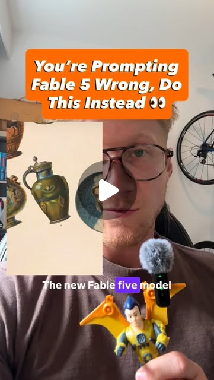

Instagram Reel

00:00 The new Fable 5 model dropped yesterday and everyone's already promptin...
video transcript (enriched by ClaudeClaw)
Summary
00:00 The new Fable 5 model dropped yesterday and everyone's already prompting it wrong. But Anthropic just released a full guide showing you how to prompt it properly.
00:00 The new Fable 5 model dropped yesterday and everyone's already prompting it wrong. But Anthropic just released a full guide showing you how to prompt it properly. And rule number one is the exact opposite of what everyone's been telling you about prompting. Let me show you.
00:12 First is stop over-explaining all of your prompts. Fable follows instructions really well, which means short prompts beat entire walls of text. Anthropic literally said that long prompts actually make it dumber.
00:22 Second is you actually have to tell it why you're asking for the thing you're asking for, not just why you want it. In other words, give it the goal of the task you're trying to accomplish and let it connect the dots for you rather than you explaining absolutely everything in one big prompt.
00:36 Third is you state the boundaries and tell Claude what it's not allowed to touch. Fable is super autonomous, and that means it's going to go and do things that you never actually told it it's allowed to do. So you have to be really explicit in your prompts on telling it what it can and it cannot touch so that it stays in its lane.
00:49 Now there's a little bit more to it than that in the article, but the key takeaways are: strip down all your prompts, give it your hardest tasks, tell it why you want it to do those things, give it its guard rails, then get out of the way and let Claude cook! And if you want my full guide and breakdown on how to prompt Fable properly, just comment UPDATE down below and I'll send it over to you.
ON-SCREEN TEXT:
00:00 You're Prompting Fable 5 Wrong, Do This Instead 👀
00:12 Rule 1: Less Is More
00:20 Long prompts = dumber
00:22 Rule 2: Give it a reason
00:32 Let's Fable figure out the path
00:36 Rule 3: Set Boundaries
00:46 Tell it what it's not allowed to do
00:53 1. Simplify your prompts
00:54 2. Give it hard tasks
00:55 3. Tell it why you're doing what you're doing
00:57 4. Set boundaries
00:58 Then Let Claude Cook!
00:59 Comment UPDATE for the full guide
View original on Instagram Reel →